Circle Theorems
Some interesting things about angles and circles
Inscribed Angle
First off, a definition:
Inscribed Angle: an angle made from points sitting on the circle's circumference.
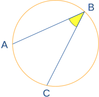
A and C are "end points"
B is the "apex point"
Play with it here:
When you move point "B", what happens to the angle?
Inscribed Angle Theorems
Keeping the end points fixed ...
... the angle a° is always the same,
no matter where it is on the same arc between end points:
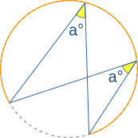
(Called the Angles Subtended by Same Arc Theorem)
And an inscribed angle a° is half of the central angle 2a°
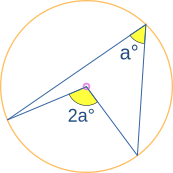
(Called the Angle at the Center Theorem)
Try it here (not always exact due to rounding):
Example: What is the size of Angle POQ? (O is circle's center)
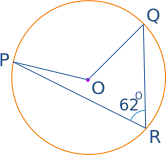
Angle POQ = 2 × Angle PRQ = 2 × 62° = 124°
Example: What is the size of Angle CBX?
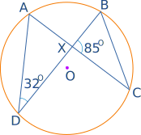
Angle ADB = 32° also equals Angle ACB.
And Angle ACB also equals Angle XCB.
So in triangle BXC we know Angle BXC = 85°, and Angle XCB = 32°
Now use angles of a triangle add to 180° :
Angle in a Semicircle (Thales' Theorem)
An angle inscribed across a circle's diameter is always a right angle:
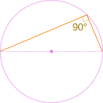
(The end points are either end of a circle's diameter,
the apex point can be anywhere on the circumference.)
Play with it here:
|
Why? Because: The inscribed angle 90° is half of the central angle 180° (Using "Angle at the Center Theorem" above) |
 |
Another Good Reason Why It Works
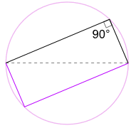
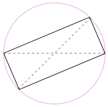
We could also rotate the shape around 180° to make a rectangle!
It is a rectangle, because all sides are parallel, and both diagonals are equal.
And so its internal angles are all right angles (90°).
Example: What is the size of Angle BAC?
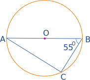
The Angle in the Semicircle Theorem tells us that Angle ACB = 90°
Now use angles of a triangle add to 180° to find Angle BAC:
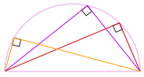
So there we go! No matter where that angle is
on the circumference, it is always 90°
Finding a Circle's Center
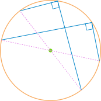
We can use this idea to find a circle's center:
- draw a right angle from anywhere on the circle's circumference, then draw the diameter where the two legs hit the circle
- do that again but for a different diameter
Where the diameters cross is the center!
Drawing a Circle From 2 Opposite Points
When we know two opposite points on a circle we can draw that circle.
Put some pins or nails on those points and use a builder's square like this:
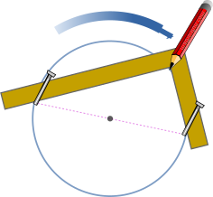
Cyclic Quadrilateral
|
A "Cyclic" Quadrilateral has every vertex on a circle's circumference: |
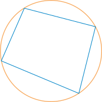 |
|
A Cyclic Quadrilateral's opposite angles add to 180°:
a + c = 180° b + d = 180° |
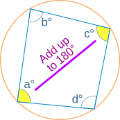 |
Example: What is the size of Angle WXY?

Opposite angles of a cyclic quadrilateral add to 180°
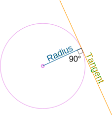
Tangent Angle
A tangent line just touches a circle at one point.
It always forms a right angle with the circle's radius.